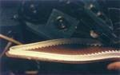
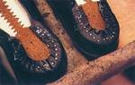

Como Hacemos el zapato

1. Horma y plantilla
Se elabora la horma a partir de valores medios. La plantilla se corta y fija a la horma.

2. Pestaña del hendido
Se pega una fina cinta de piel a la plantilla, donde se coserán el cerquillo y la pala.

3. Corte de la pala
Los cortadores preparan los patrones y recortan las piezas de la pala.

4. Horma y plantilla
Los closers cosen las partes de la pala y el forro, y se fijan provisionalmente a la horma.
5. Horma y plantilla
Una sola costura une la pala, la pestaña del hendido y el cerquillo.

6. Horma y plantilla
En el talón, la suela se fija con clavos. El hueco entre suela y plantilla se rellena con corcho y resina.

7. Horma y plantilla
Se cose al cerquillo mediante máquina, garantizando firmeza y estabilidad.

8. Horma y plantilla
Se compone de 4 a 5 capas de piel. Se añade una capa de goma en la base para mayor durabilidad.